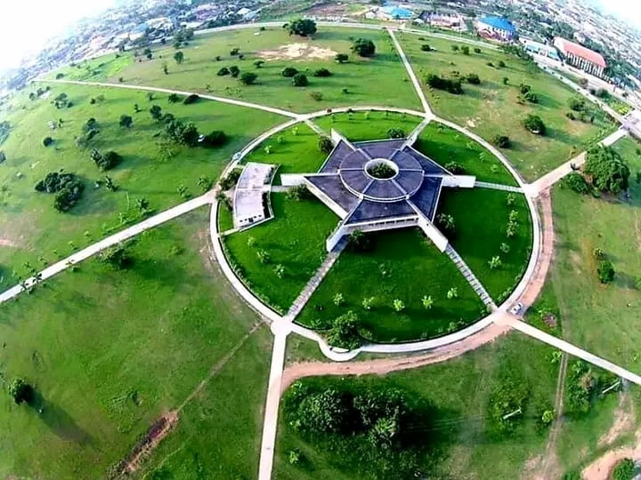

Akwa Ibom State
The Land of Promise
About
Akwa Ibom State is located in the coastal south-eastern part of Nigeria. Created on September 23, 1987, it is one of the most prosperous states in Nigeria, known for its vast oil reserves, vibrant culture, and stunning Atlantic coastline. The state capital is Uyo, a modern and rapidly developing city.
The people of Akwa Ibom, the Ibibio, Annang, and Oron, are known for their warm hospitality, rich traditions, and colourful festivals. The state is also home to the Ibom Tropicana Entertainment Centre, Ibom Air, and a thriving agricultural sector.
Weather

Condition: Partly Cloudy
Temperature: 30°C
Wind Speed: 12 km/h
Humidity: 78%
Wind Chill:
Quick Facts
| Capital | Uyo |
|---|---|
| Country | Nigeria |
| Area | 7,081 km² |
| Population | ~5.5 million |
| Language | English, Ibibio |
| Known For | Oil, Culture, Coastline |